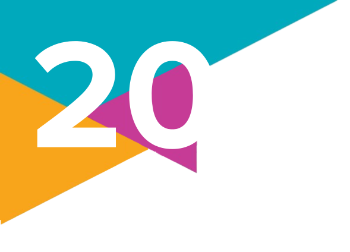

Debatendo a diversidade
1.
Qual é a diferença entre sexo e gênero? O que significam os conceitos de orientação sexual e identidade de gênero?
2.
(Unicamp-SP – 2022)
No Brasil, um exemplo de história que precisa ser narrada é a dos movimentos em defesa dos direitos que hoje reconhecemos como movimentos LGBTQIA+. Tais movimentos eclodiram como um ato de resistência em plena ditadura civil-militar, marcada pela repressão e por ideais conservadores. Naquele contexto, a busca por visibilidade passou a ser compreendida como um dos elementos fundamentais para a conquista da cidadania.
Entre outras coisas, os ativistas defendiam que os direitos políticos, sociais e civis tornam-se socialmente legítimos para os cidadãos quando envolvem o direito aos meios de comunicação e à livre expressão.
A partir da leitura do texto, assinale a alternativa correta acerca da historicidade dos movimentos políticos identitários e suas estratégias políticas de ação.
a) Esses movimentos eclodiram na segunda metade do século XX, foram perseguidos e silenciados pela ditadura militar e retornaram à cena pública após a instauração de um regime democrático.
b) Por sua capacidade de obter alcance social, desde a década de 1970, as mídias são ferramentas para a construção de uma cidadania plena, sendo a busca por visibilidade, portanto, uma das estratégias de ação do movimento LGBTQIA+.
c) O Brasil do século XX construiu-se como uma democracia racial, o que garantiu aos movimentos políticos e identitários nacionais o acesso aos direitos civis, políticos e sociais, esvaziando as agendas dos militantes LGBTQIA+.
d) Na atualidade, a onda de crimes de homofobia e transfobia estimulam o movimento LGBTQIA+ a rever a pauta da visibilidade dos sujeitos, tornando a militância mais discreta e voltada para o espaço privado da ação dos indivíduos.
No Brasil, um exemplo de história que precisa ser narrada é a dos movimentos em defesa dos direitos que hoje reconhecemos como movimentos LGBTQIA+. Tais movimentos eclodiram como um ato de resistência em plena ditadura civil-militar, marcada pela repressão e por ideais conservadores. Naquele contexto, a busca por visibilidade passou a ser compreendida como um dos elementos fundamentais para a conquista da cidadania.
Entre outras coisas, os ativistas defendiam que os direitos políticos, sociais e civis tornam-se socialmente legítimos para os cidadãos quando envolvem o direito aos meios de comunicação e à livre expressão.
(Baseado em Vinicius Ferreira e Igor Sacramento, Editorial: Movimento LGBT no Brasil: violências, memórias e lutas. Reciis – Rev Eletron Comun Inf Inov Saúde. 2019 abr.-jun.13(2): p. 234-239.)
A partir da leitura do texto, assinale a alternativa correta acerca da historicidade dos movimentos políticos identitários e suas estratégias políticas de ação.
a) Esses movimentos eclodiram na segunda metade do século XX, foram perseguidos e silenciados pela ditadura militar e retornaram à cena pública após a instauração de um regime democrático.
b) Por sua capacidade de obter alcance social, desde a década de 1970, as mídias são ferramentas para a construção de uma cidadania plena, sendo a busca por visibilidade, portanto, uma das estratégias de ação do movimento LGBTQIA+.
c) O Brasil do século XX construiu-se como uma democracia racial, o que garantiu aos movimentos políticos e identitários nacionais o acesso aos direitos civis, políticos e sociais, esvaziando as agendas dos militantes LGBTQIA+.
d) Na atualidade, a onda de crimes de homofobia e transfobia estimulam o movimento LGBTQIA+ a rever a pauta da visibilidade dos sujeitos, tornando a militância mais discreta e voltada para o espaço privado da ação dos indivíduos.
3.
Quais foram as transformações que aconteceram a partir da metade do século XX e que garantiram o avanço dos direitos de pessoas trans e homossexuais?
4.
Com base em pesquisa prévia e nos dados do relatório da ILGA que estudamos no capítulo, intitulado Homofobia Patrocinada pelo Estado 2019, junte-se a um colega e investiguem um país que apresente legislação sobre orientação sexual. Organizem-se para que as duplas formadas na turma pesquisem países distintos. Podem ser contemplados tanto países que tenham leis de proteção à discriminação por orientação sexual quanto países que criminalizem as relações entre pessoas do mesmo sexo. Orientem-se de acordo com as seguintes etapas.
a) Realizem pesquisas em sites na internet e portais de notícias confiáveis e procurem destacar informações respondendo às perguntas: O que diz a lei desse país sobre discriminação ou criminalização das relações entre pessoas do mesmo sexo? Qual é a situação das pessoas trans ou homoafetivas nesse país? Há movimentos sociais organizados de defesa dos direitos das pessoas LGBTQIAPN+ no país?
b) Sistematizem as informações encontradas sobre o país estudado em uma apresentação para a turma, que pode ser feita em forma de cartaz ou em meio digital.
c) Em data combinada com o professor, apresentem os resultados de sua pesquisa para os colegas.
a) Realizem pesquisas em sites na internet e portais de notícias confiáveis e procurem destacar informações respondendo às perguntas: O que diz a lei desse país sobre discriminação ou criminalização das relações entre pessoas do mesmo sexo? Qual é a situação das pessoas trans ou homoafetivas nesse país? Há movimentos sociais organizados de defesa dos direitos das pessoas LGBTQIAPN+ no país?
b) Sistematizem as informações encontradas sobre o país estudado em uma apresentação para a turma, que pode ser feita em forma de cartaz ou em meio digital.
c) Em data combinada com o professor, apresentem os resultados de sua pesquisa para os colegas.
5.
O movimento LGBTQIAPN+ passou por diversas transformações ao longo das últimas décadas. Qual das alternativas abaixo NÃO representa uma conquista ou avanço do movimento no Brasil?
a) O reconhecimento legal da união estável de casais do mesmo sexo.
b) A criminalização da homofobia e da transfobia.
c) A possibilidade de pessoas trans alterarem seu nome e gênero no registro civil sem necessidade de autorização judicial.
d) A inclusão de personagens LGBTQIAPN+ em novelas e programas de TV.
a) O reconhecimento legal da união estável de casais do mesmo sexo.
b) A criminalização da homofobia e da transfobia.
c) A possibilidade de pessoas trans alterarem seu nome e gênero no registro civil sem necessidade de autorização judicial.
d) A inclusão de personagens LGBTQIAPN+ em novelas e programas de TV.